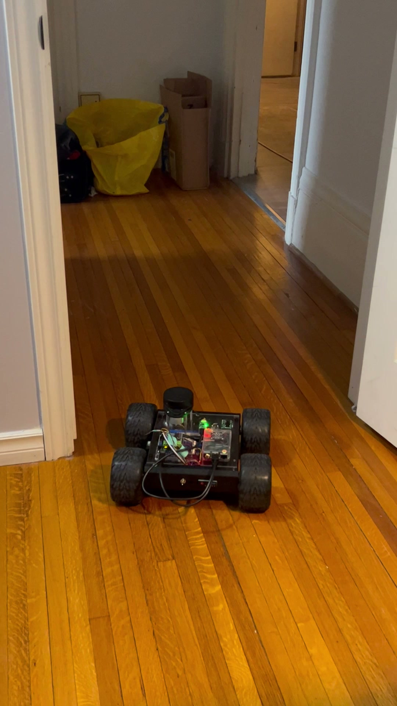
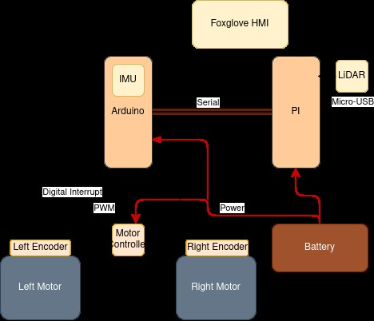
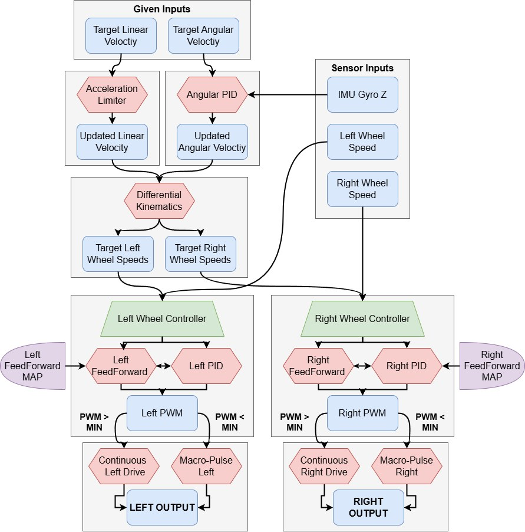
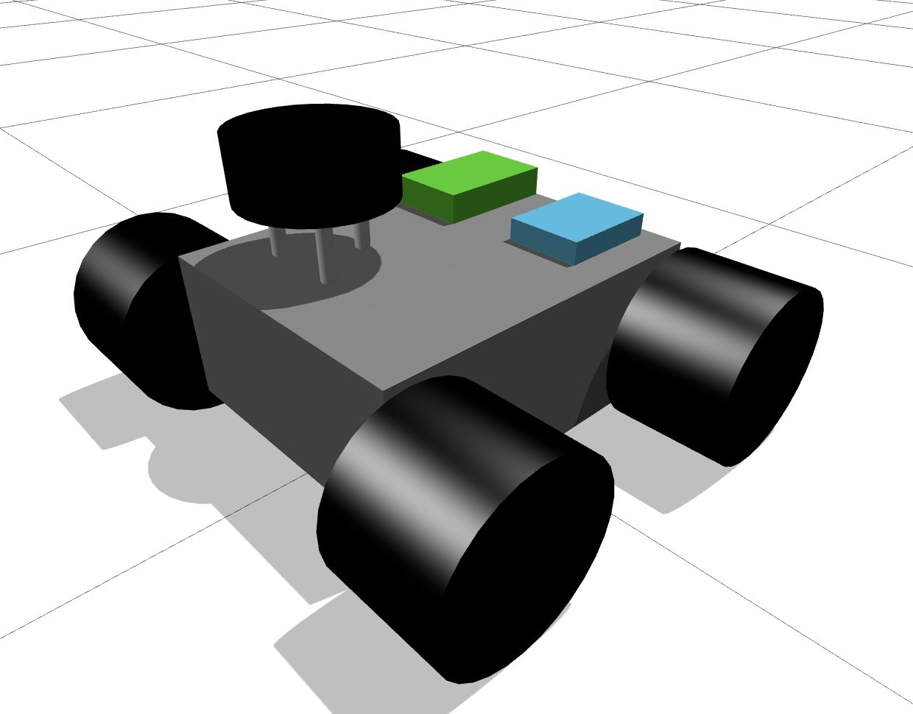
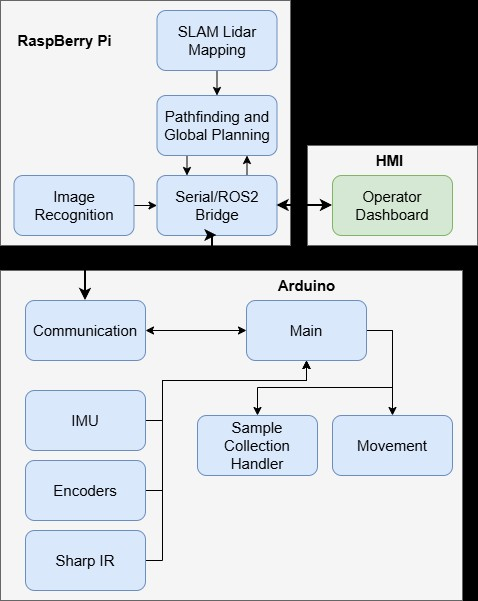
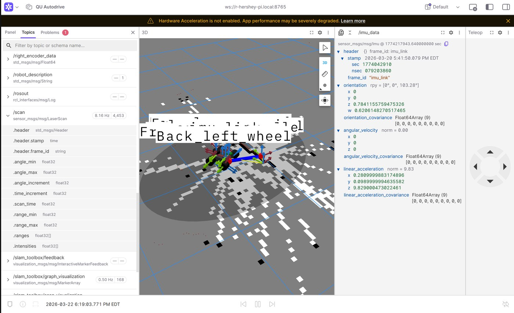
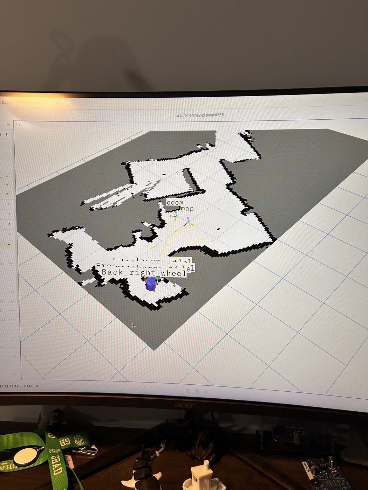

Engineered as a comprehensive mechatronics design project, this 4-wheel-drive autonomous rover was developed to perform 2D Simultaneous Localization and Mapping (SLAM) and dynamic path planning in unknown environments. Built and demonstrated as a working prototype on a Lynxmotion chassis, the system integrates LiDAR scanning, sensor fusion, and a distributed ROS 2 architecture to achieve real-time autonomous navigation and computer vision-based object detection.
The platform distributes compute across two layers: an Arduino Uno handles hard real-time sensor reading and motor control, while a Raspberry Pi 4 runs ROS 2 Humble for SLAM, navigation, and image recognition. The two communicate over a serial bridge; a Foxglove Studio HMI connects wirelessly to the Pi's ROS 2 network for remote telemetry, visualization, and manual override.

Built on a Lynxmotion A4WD1 kit: four fixed wheels driven by 12V DC planetary gear motors in a skid-steer configuration.
The custom-designed motor controller translates target linear and angular velocities into left and right PWM signals through a multi-stage process:

A Slamtec RPLiDAR publishes 2D range data to /scan; a URDF model of the rover
defines the physical/kinematic tree so every sensor reading is correctly positioned relative
to the chassis. SLAM Toolbox fuses the LiDAR scans with wheel odometry and IMU data via an EKF node to build
a 2D occupancy grid map while correcting for odometry drift. Nav2 provides global path
planning (A*) and a local planner for dynamic obstacle avoidance, while a Pi Cam feed processed with
OpenCV handles localized object detection routines.


| Node | Publishes | Subscribes | Role |
|---|---|---|---|
| SLidar Node | /scan | -- | Formats LiDAR range/angle stream into sensor_msgs/LaserScan |
| Arduino Bridge | /odom, /imu_data, /joint_states, tf | Arduino serial stream | Parses hardware data, republishes as ROS 2 topics, broadcasts odom->base_link |
| Robot State Publisher | /tf | /joint_states, URDF | Computes exact 3D pose of every link from the kinematic tree |
| SLAM Toolbox | /map, tf (map->odom) | /scan, /odom, /tf | Builds the 2D occupancy grid, corrects odometry drift |
| Foxglove Bridge | WebSocket | /scan, /odom, /tf, /joint_states, /map | Serializes the whole state for remote visualization |
| Nav2 | /cmd_vel | /map, /scan, /odom, /tf | Global (A*) + local planning to close the autonomy loop |
Foxglove Studio connects to the Pi's ROS 2 network over WiFi to render the live SLAM map, the rover's URDF model, camera feed, and hardware telemetry (wheel RPM, PID error, IMU data) without adding compute load to the Pi. It also accepts mission start/target coordinates and manual velocity overrides. A heartbeat timeout on the Arduino side brings the rover to a safe stop automatically if it loses contact with the Pi.

